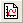

Originは、100種類以上のグラフをサポートしています。
新しい2Dグラフウィンドウを開くには
1. 「標準」ツールバーの新グラフウィンドウ ボタンをクリックします。
特に変更していなければ、このボタンにより、Origin.otpテンプレートを元にした基本的な2DのXYグラフウィンドウを開きます。 データは、「作図のセットアップ」ダイアログボックスやドラッグ＆ドロップを使って、このテンプレートに直接追加して、折れ線、散布図、線＋シンボル、縦棒/横棒グラフを作成することができます。
通常、ほとんどのグラフに対しては、空のテンプレートを開いて、データを追加するということはできません（ボックスチャートなど）。 これは、グラフが作成される前に一定量のデータ処理を行わなければならないためです。 グラフを作成する通常の方法は、(1)データを選択する(グラフの種類に合っていること)、そして(2)「作図」メニューからグラフの種類を選択または「2Dグラフギャラリー」ツールバーのボタンをクリックして、プロットします。
既に述べたように、すべてのOriginのグラフは、Originと一緒にインストールされるグラフテンプレートを元にして作成されます。 グラフテンプレートには、グラフのページサイズ、グラフレイヤの数、グラフの軸構成、プロット形式と色などに関する情報が保存されます。グラフテンプレートに保存されるものと保存されないものの詳細については、「何がグラフテンプレートと一緒に保存されるのか?」を参照してください。
基本的なグラフ作成や編集については、次のトピックを参照してください。